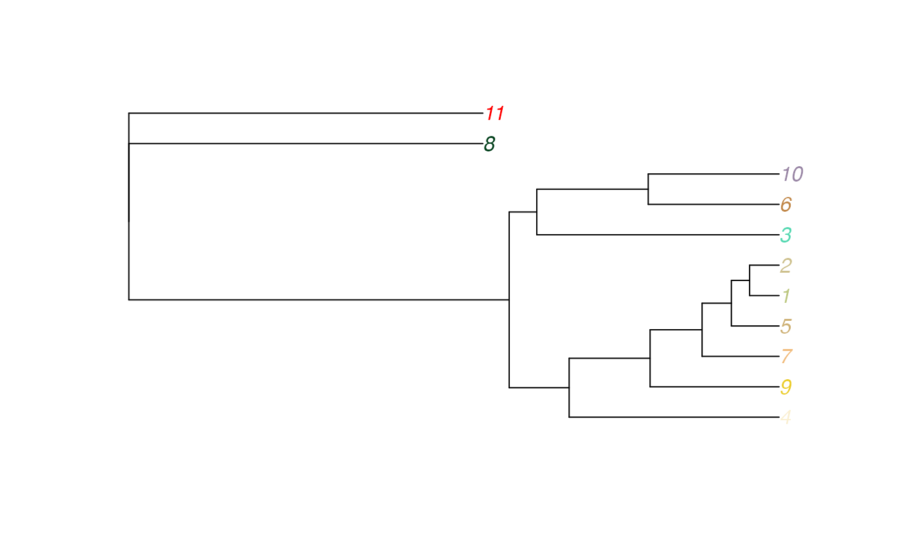

v1.1.9.RmdKey updates in v1.1.9:
Document Format Notes:
When creating a DATASET_SIMPLEBAR unit with
create_unit, for example:
library(itol.toolkit) # main package
library(dplyr) # data manipulation
library(data.table) # file read
tree_1 <- system.file("extdata","dataset4/otus.contree",package = "itol.toolkit")
data_file_1 <- system.file("extdata","dataset4/annotation.txt",package = "itol.toolkit")
data_1 <- data.table::fread(data_file_1)
# simple_bar by NS
unit_4 <- create_unit(data = data_1 %>% select(ID, Asia),
key = "rep_Zhou_4_multibar",
type = "DATASET_SIMPLEBAR",
tree = tree_1)## [1] "DATASET_SIMPLEBAR"In versions v1.1.8 and earlier, the following warning would be triggered:
Warning in mean.default(data) : argument is not numeric or logical: returning NA
The generated template file might contain something like this:
DATASET_SCALE 0.009113938 NA 4.09978
When using mean directly, since the selected data frame
is not purely a numeric vector, the result cannot be calculated.
data_1 %>% select(Asia) %>% mean()
data_1 %>% select(North_America, Asia) %>% mean()
# Returns:
# [1] NA
# Warning message:
# In mean.default(.) : argument is not numeric or logical: returning NAThus, the solution is to convert the data frame to a vector, then
calculate mean by rows or columns, which will yield a
numeric vector and resolve the issue:
data_1 %>% select(North_America, Asia) %>% rowMeans() %>% mean()
data_1 %>% select(North_America, Asia) %>% colMeans() %>% mean()
# [1] 0.2529557
# Also works for single-column data:
data_1 %>% select(Asia) %>% rowMeans() %>% mean()
# [1] 0.2657To fix the issue, change the code at line 1364 in user.R
to:
In the gradient template, mean() does not trigger a
similar issue because gradient does not require a scale value, and
instead automatically generates the legend. In the future, a unified
function could be designed to handle scale information for different
templates.
While heatmaps typically take multi-column data as input, and
single-column heatmaps can be replaced by the gradient, single-column
heatmaps still offer more adjustable parameters. Hence, some users still
use the single-column heatmap feature. However, when calling
create_unit to create a unit, an error is thrown:
unit_6 <- create_unit(data = data_1 %>% select(ID, Asia),
key = "rep_Zhou_6_multibar",
type = "DATASET_HEATMAP",
tree = tree_1)
# Error in hclust(dist(t(data %>% select(field_names)))) :
# must have n >= 2 objects to clusterWhen hclust is used for clustering, if the input data
has only one column, clustering cannot be performed, leading to an error
when generating the field tree. Therefore, a conditional check should be
added near line 959 in user.R to skip field tree generation
if the input is a single column:
if(length(names(data)) == 2){
field_tree <- NULL
}else{
field_tree <- write.tree(ape::as.phylo(hclust(dist(t(data %>% select(field_names))))))
}This ensures that the template file is generated successfully without errors. However, when submitting the updated template to iTOL, the following message is displayed:
Leaf ‘undefined’ in the heatmap field tree is not present in the FIELD_LABELS.
Field label ‘Asia’ is not present in the heatmap field tree.
Failed to parse the FIELD_TREE. Make sure it is in Newick format.
This occurs because, when the field tree is empty, it automatically
inherits the style template content. Since updating the logic for style
template inheritance requires system-level review, the issue is
temporarily resolved by skipping the field tree output when the input
has a single column. The following changes are made in
user.R at line 969 and in output.R at line
230:
# user.R L969
if(length(names(data)) == 2){
specific_themes[["heatmap"]][["tree"]][["tree_display"]] <- 0
}else{
specific_themes[["heatmap"]][["tree"]][["tree"]] <- field_tree
}
# output.R L230
if (!is.null(unit@specific_themes$heatmap$tree$tree)) {
if(unit@specific_themes$heatmap$tree$tree_display == 1){
lines <- c(lines, paste("FIELD_TREE", paste(unit@specific_themes$heatmap$tree$tree, collapse = unit@sep), sep = unit@sep))
}
}Due to the previous version’s limitation, write_hub only
output template files in bulk without outputting tree files, which made
it difficult for beginners to locate tree files within the package. To
make it easier for users to obtain all files for uploading to iTOL at
once, the write_hub function in v1.1.9 introduces the
with_tree parameter. When with_tree = TRUE,
tree files are also outputted. This parameter defaults to
FALSE to maintain backward compatibility.
hub_1 <- create_hub(tree_1)
hub_1 <- hub_1 + unit_4 + unit_5 + unit_6
write_hub(hub_1, "~/Downloads/", with_tree = T)However, in versions v1.1.8 and earlier, running this might cause an error:
# No error with the following:
hub_1 <- hub_1 + unit_4 #+ unit_5 + unit_6
hub_1 <- (hub_1 + unit_4) + unit_5 #+ unit_6
# Error with the following:
hub_1 <- ((hub_1 + unit_4) + unit_5) + unit_6
# Error in UseMethod("tbl_vars") :
# no applicable method for 'tbl_vars' applied to an object of class "c('double', 'numeric')"This error occurs because when a heatmap is merged into the hub, if
the data format is data.table, it results in a format
conversion error. To fix this, add a format conversion at line 1352 in
learn.R:
abundance <- as.data.frame(abundance)A color sorting algorithm is supported, allowing users to define
custom sorting rules through the sort_color() method and
specify a reference color for sorting. This feature is still being
explored, and concrete examples will be provided in the future.
set.seed(123)
colors <- get_color(10,set = "wesanderson")
sort_color(colors,plot = T, root="#FF0000")
## [1] "#D8B70A" "#A42820" "#FF0000" "#C27D38" "#FAD77B" "#02401B" "#EABE94"
## [8] "#DD8D29" "#8D8680" "#3B9AB2"This feature is still in the exploration stage, and concrete examples will be provided later. Method 2 will be further optimized.
Generate a tree directly from a template string:
data("template_groups")
plot(vector_tree(template_groups$template))